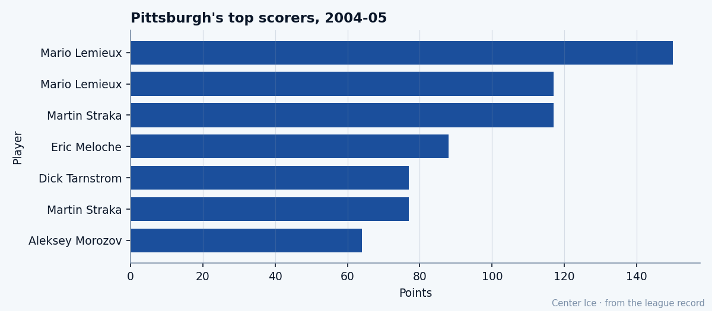

The 186th Pick, at 28: Eric Meloche has 3 more playoff goals than Mario Lemieux
A base grade of 79 against a potential of 76, $0.40M a season, 22.0 minutes a night, and the Pittsburgh Penguins need every one of them tonight
 Tomáš VránaProfile writer · The Sweater
Tomáš VránaProfile writer · The SweaterEric Meloche75 has three goals in two playoff games.  Mario Lemieux85, the first overall pick of 1984, has none. The 186th selection of the 1996 draft leads the
Mario Lemieux85, the first overall pick of 1984, has none. The 186th selection of the 1996 draft leads the  Pittsburgh Penguins in playoff goals heading into tonight's Game 3 against
Pittsburgh Penguins in playoff goals heading into tonight's Game 3 against  New Jersey Devils, and his contract costs $0.40M.
New Jersey Devils, and his contract costs $0.40M.
Meloche is 28 years old. The Book has him at 78 today, a base grade of 79 plus 1 on the Development Index. His published potential is 76. Three grades of ceiling were gone a while ago, and nobody in Pittsburgh has acted like it matters.
Tonight is about 22.0 minutes a night, a speed grade of 85, a deking grade of 85, a passing grade of 84, and a man who gets open because he is faster than the defenceman trying to take him off the puck.

Last season Meloche won the Calder Memorial Trophy. 23 goals, 65 assists, 88 points in 82 games, 4 penalty minutes. He was 27 years old. Most Calder winners are a decade younger. He had been drafted in 1996, in the 7th round, 186th overall, and the record shows him in a Pittsburgh sweater from the first day it opened, December 1, 2004, already there, already part of the room. Whatever happened between the draft and the NHL is not on the record. The numbers on the record say 88 points in 82 games, almost four times as many assists as penalties, and a trophy that goes to the best rookie in the league.
This season he has 20 goals and 43 assists in 64 games. 22 penalty minutes, not 4. The minutes went from 21.3 to 22.0. The Index went up one grade. His today-grade reads 78. He is past the ceiling the Bureau set, at 28, on the cheapest contract on a roster that needs him to be exactly who he is.
What makes him and what does not
Speed 85. Deking 85. Passing 84. Puck control 84. Acceleration 80. Accuracy 79. Those are the numbers of a forward who creates space with his feet and fills it with his hands.
Fighting 50. Faceoffs 55. Defensive awareness 59. Nobody is asking him to win a draw in his own zone or go at anyone along the boards. The Pittsburgh Penguins coaching staff plays him 22.0 minutes on a club with four men on the injured list and a 7th-seed playoff berth that nobody forecast in October.
The Bureau set his potential at 76. Maybe the fighting grade was the thing that closed the file. The Book today says base 79. He is third on this club in scoring, behind Mario Lemieux and  Martin Straka83, at 63 points in 64 games.
Martin Straka83, at 63 points in 64 games.
| Player | Points | Games | $M per point |
|---|---|---|---|
| Mario Lemieux | 117 | 73 | 0.085 |
| Martin Straka | 77 | 48 | 0.055 |
| Eric Meloche | 63 | 64 | 0.006 |
Meloche's 0.006 per point is the cheapest on the Pittsburgh salary sheet. All three names in that table are the three the scouting report said would never be enough.
The name in the building
A Meloche finished a career in this club. The record has Gilles Meloche traded from Edmonton to Pittsburgh before the 1985-86 season in the deal that brought Marty McSorley to the Oilers. He played three seasons as the Penguins' starting goaltender and retired following 1987-88.
Eric Meloche was born in Lachute, Quebec, in May 1976. He was nine years old when the last game in a Meloche sweater ended in Pittsburgh.
The family story is not on the record. The last name is, and the city, and the building. Eric Meloche put the name back in the room 17 seasons after it left, and he did it as the 186th pick in a draft almost nobody watched, at 28 years old, on a deal that costs less per season than most players on this roster make in a month.
A man with a morale grade of 99 does not read the Development Index or count the 3 grades he has walked past. He looks at the ice and finds the open man. Mario Lemieux is the open man most nights. Martin Straka is the open man when Lemieux sits. Meloche is the man passing to both of them, 22.0 minutes a night, $0.40M a season, 1 year left.
The room and the night
The Penguins finished 7th in the East with 85 points, 24 wins, 34 losses, 11 overtimes. They have four men on the injured list.  Aleksey Morozov76 carries a hand with a return date of April 16, four days from tonight.
Aleksey Morozov76 carries a hand with a return date of April 16, four days from tonight.  Guillaume Lefebvre75 has a foot that goes to May 15. The room is thin and the lineup is stretched. A 7th-round pick is playing 22.0 minutes because there is nobody else who can do it.
Guillaume Lefebvre75 has a foot that goes to May 15. The room is thin and the lineup is stretched. A 7th-round pick is playing 22.0 minutes because there is nobody else who can do it.
Pittsburgh went to New Jersey and won Game 1, 3-2. Meloche scored in it. New Jersey Devils answered 3-1 in Game 2.  Johan Hedberg86 has a 1-1 record and a goals-against average of 2.50 across the two games. Tonight they play in Pittsburgh with the series at 1-1, and Game 3 decides who gets Tuesday off and who does not.
Johan Hedberg86 has a 1-1 record and a goals-against average of 2.50 across the two games. Tonight they play in Pittsburgh with the series at 1-1, and Game 3 decides who gets Tuesday off and who does not.
In two playoff games, Meloche has logged 21.0 minutes a night. He has 3 goals and 1 assist. Lemieux, 39 years old, has 0 goals and 4 assists in 2 games at the same 21.0 minutes. The points are the same. The goals are not.
The Bureau will publish its next edition before the offseason, and someone will look at the potential of 76 against the base of 79 and decide whether the gap is noise or a sign that the grade missed something about a kid from Lachute with a fighting grade of 50. A man on a $0.40M deal is standing in Pittsburgh tonight with the puck on his stick and the building loud and a goaltender in white trying not to let in another goal, and none of that is a grade on a sheet.